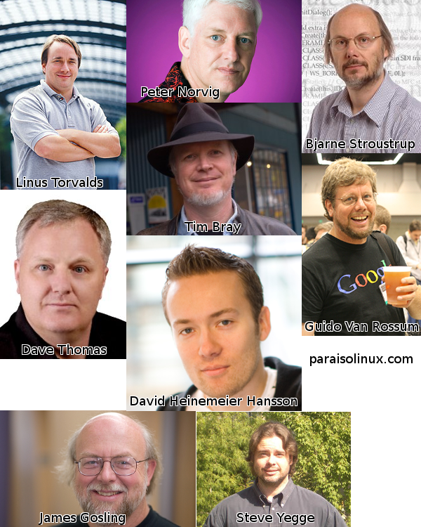

10 preguntas a los más reconocidos programadores del mundo
Estas son 10 preguntas que un blogger hizo y se las envio a varios de los mas grandes programadores, entre los cuales se encuentra uno que todos los lectores de este blog(paraisolinux.com) deberian conocer.
La sorpresa fue grata cuando empezaron a responder y al final quedo una lista de 10 preguntas a 9 grandes programadores. Algunas muy curiosas como el tipo de musica que les gusta y otras muy interesantes como el rol de la universidad en su desarrollo personal.
Contents
- 1 - ¿Cómo aprendió a programar? ¿Las escuelas le resultaron de alguna utilidad? ¿O acaso ni siquiera se molestó en terminar la escuela?
- 2 – ¿Cuál cree que es la habilidad más importante que debería tener un programador?
- 3 – ¿Cree que las matemáticas o la física son un conocimiento importante para un programador? ¿Por qué?
- 4 – ¿Cuál cree que será la próxima “gran cosa” en la programación? ¿Programación orientada a X, el lenguaje Y, computación cuántica, o qué cosa?
- 5 – Si tuviera tres meses para aprender una tecnología relativamente nueva, ¿cuál eligiría?
- 6 – ¿Qué hace que algunos programadores sean 10 o 100 veces más productivos que otros?
- 7 – ¿Cuáles son sus herramientas favoritas (sistemas operativos, lenguajes de programación/scripting, editor de texto, sistema de control de versiones, shell, motor de base de datos, y otras herramientas sin las que pueda vivir) y por qué le gusta más que otras?
- 8 – ¿Cuál es su libro favorito relacionado con la programación?
- 9 – ¿Cuál se su libro favorito que NO esté relacionado con la programación?
- 10 – ¿Cuál es su banda/músico/compositor de música favorito?
Lista de los 9 programadores que respondieron:
- Linus Torvalds - Creador de Linux y GIT, no necesita presentación.
- Dave Thomas - Autor de “El programador pragmático”, “Programación en Ruby” y otros grandes libros de programación.
- David Heinemeier Hansson - Creador de Rails Framework(framework web), escritor y conductor de autos de carreras. Autor del weblog Loud Thinking.
- Steve Yegge - Uno de los menos conocidos del grupo, pero que tiene respuestas muy interesantes. Programador y blogger. Tiene unas 2 decadas de experiencia en esta industria.
- Peter Norvig - Director de Investigación en Google, autor de varios libros importantes de inteligencia artificial. Pueden visitar su página principal.
- Guido van Rossum - Creador del lenguaje Python.
- Bjarne Stroustrup - Creador de C++. Pueden visitar su página principal.
- James Gosling - Creador del lenguaje Java.
- Tim Bray - Uno de los autores de la especificación de XML y Atom. Publica en su blog ongoing.
Prepare esta imagen por si alguna vez se los cruzan
A continuación las 10 preguntas y sus respuestas:
1 - ¿Cómo aprendió a programar? ¿Las escuelas le resultaron de alguna utilidad? ¿O acaso ni siquiera se molestó en terminar la escuela?
- Steve Yegge: Aprendí por mi cuenta a programar en una calculadora HP usando el lenguaje de pila de notación polaca inversa (RPN) cuando tenía 17 años. Había intentado aprender a programar antes, pero nunca terminaba de “captar” el concepto. Las calculadoras científicas HP 28c y 48g eran bastante poderosas y tenian excelente documentación. Escribí un visualizador de mallas 3D para la 48g – tenía un libro de gráficos 3D y muy laboriosamente logré traducir un ejemplo desde Pascal al lenguaje de pila RPN. Fue muy inspirador verlo funcionar. Luego compré una PC y Turbo Pascal, y comencé a estudiar programación con ganas. Ya programaba bastante bien cuando ingresé a la universidad para el curso de Ciencias de la Computación.Fui a la Universidad de Washington y conseguí un título terciario en Ciencias de la Computación. Definitivamente valió la apena, y le recomiendo a todos los programadores que consigan un título en sistemas si pueden.
- Linus Torvalds: No aprendí a programar en la escuela, sino por mi cuenta leyendo libros y practicando (inicialmente en una Commodore VIC-20, más tarde en una Sinclair QL).Dicho esto, creo que en especial la Universidad me resultó muy útil. En vez de ir a una universidad de ingeniería, fui a la Universidad de Helsinki, que es bastante teórica, así que la enseñanza no se centra mucho en la programación (que era una pequeña parte, y de todas formas terminé haciendolo “por otro lado”), sino que la mayoría de los cursos se enfocaban en los conceptos fundamentales y en cosas como análisis de complejidad.Si bien puede parecer aburrido e incluso una pérdida de tiempo, creo que fue útil y lo disfruté la mayor parte del tiempo. Y probablemente soy un mejor programador gracias a eso.
- David Heinemeier Hansson: Aprendí a programar al crear mi primer página web en HTML. Después quise crear algunas partes dinámicas y elegí primero ASP, luego PHP. Luego de que aprendí a programar, comencé a estudiar a la vez una carrera de Ciencias de la Computación y Administración de Empresas.
- Peter Norvig: Hice cursos en la secundaria y en la universidad, pero siempre sentí que aprendí más por mi cuenta.
- Dave Thomas: Durante la secundaria tomé clases sobre computación. Me enganchó totalmente: me enamoré de la programación, y busqué universidades que dieran cursos de software. Eventualmente fui al Imperial College, parte de la Universidad de Londres. Era el segundo año que ofrecian un curso en software, y fue absolutamente maravilloso: el plantel y los estudiantes trabajaban juntos para hacer que los materiales resulten mejor, y todos aprendiamos un montón. Este curso me dio una excelente base para el desarrollo de software. Me quedé para comenzar un PhD, pero luego lo dejé por un proycto.Pero la pregunta general es “¿cómo aprendí a programar?”. La respuesta real es que “todavía estoy aprendiendo a programar”. Creo que cualquier buen desarrollador sigue aprendiendo toda su carrera. No es sólo agarrar un lenguaje nuevo y sus librerías: los buenos programadores también refinan sus técnicas y prácticas durante los años.
- Guido van Rossum: Fui a la universidad donde tenían un enorme mainframe y había varios cursos de computación. Fue muy importante para mi.
- James Gosling: Al principio aprendí por mi cuenta. Conseguí mi primer trabajo como programador antes de ir a la universidad. Pero estoy contento de haberlo hecho, me divertí un montón. Después seguí adelante hasta obtener un PhD.
- Bjarne Stroustrup: En la universidad (Aarhus y luego Cambridge). Las universidades me enseñaron muchas cosas útiles, incluso la mayoría de las bases que sería mi trabajo futuro. Además, aprendí bastante programando por dinero – donde comprender el problema real, mantenibilidad, entrega a tiempo, etc. son temas más importantes que en un entorno educacional.
- Tim Bray: Pensaba que iba a ser maestro de matemáticas. El programa de matemáticas en la Universidad requería algunos cursos de computación.
2 – ¿Cuál cree que es la habilidad más importante que debería tener un programador?
- Steve Yegge: Habilidades para comunicarse en forma escrita y verbal. Nunca vas a llegar muy lejos como programador si no podés transmitir tus ideas a otras personas de manera efectiva. Los programadores deben leer asiduamente, practicar escritura, tomar cursos de escritura, e incluso practicar el hablar en público.
- Linus Torvalds: Es una cosa llamada “gusto”. Suelo juzgar a las personas que trabajan conmigo no por su aptitud: algunas personas pueden escribir mucho código, sino más bien por cómo reaccionan al código de otras personas, y luego obviamente viendo cómo se ve el código que ellos mismos escriben, y que enfoquen toman. Esto me dice si tienen “buen gusto” o no, y la cosa es, una persona sin “buen gusto” en general no es buena para juzgar el código de otras personas, y su propio código termina siendo no del todo bueno.Pero bueno, no es lo único. Una cosa que es muy útil, especialmente en proyectos de código abierto, es la habilidad de comunicar bien lo que se quiere hacer, y cómo se va a hacer. La habilidad de explicar a otros porqué hacés algo de determinada manera es muy importante, y no todos tienen esta habilidad.Dicho esto, también hay personas que simplemente generan buen código. No son buenas explicándolo, e incluso puede que no tengan buen gusto, pero el código funciona. A veces necesitás a otra persona (una que si tenga ese “buen gusto” tan dificil de definir) para masajear el código y que resulte útil en forma más amplia, pero tan solo la habilidad de escribir código claro para problemas dificiles es obviamente una parte bastante fundamental de cualquier programador.
- David Heinemeier Hansson: Un sentido fuerte del valor. La habilidad para preguntarse a uno mismo: ¿vale la pena hacer esto ahora mismo? Muchos programadores parecen derrochar océanos de tiempo en cosas que simplemente no importan. Y no dedican el tiempo suficiente a cosas que si importan.
- Peter Norvig: No creo que sea una sola, pero digamos concentración.
- Dave Thomas: Pasión.
- Guido van Rossum: Las pregunta son bastante generales y dificiles de responder Creo que tener la habilidad de cocinarse un huevo para el desayuno es invaluable.
- James Gosling: Auto motivarse. Para ser realmente bueno, tenés que estar enamorado de lo que hacés.
- Bjarne Stroustrup: La habilidad de pensar con claridad: un programador tiene que comprender los problemas y expresar soluciones.
- Tim Bray: La habilidad de preferir la evidencia a la intuición.
3 – ¿Cree que las matemáticas o la física son un conocimiento importante para un programador? ¿Por qué?
- Steve Yegge: Hay una gran rama de la matemática que es muy importante para los programadores, llamada “matemática discreta” o “matemática concreta”. Incluye disciplinas como la probabilidad, combinatorias, teoría de grafos, pruebas por inducción, y otras herramientas útiles. Aliento a todos los programadores a que estudien matemática discreta todo lo que puedan. Incluso un poquito es mejor que nada.En cuanto a la matemática tradicional, bueno, no la uso tan a menudo, pero siempre resulta útil cuando la necesito. Por ejemplo, sólo usé cálculo matemático una vez durante el año pasado como parte de mi trabajo. Tenía que estimar la carga en la hora pico del día para un servicio cuya carga “seguía al sol” aproximadamente por una curva senoidal. La forma más simple para estimar era integrar sobre 1/24 de la curva en una hora específica. Si no hubiera sabido cálculo matemático, no hubiera podido hacer estimaciones razonablemente exactas.Cuando escribía mi juego, Wyvern, me fue sumamente útil tener conocimientos sólidos en geometría de planos básica. Y es bastante común usar álgrebra y álgrebra lineal a diario. Pero casi nunca uso trigonometría o ecuaciones diferenciales en el trabajo, ni tampoco mucho cálculo numérico.Diría que mis conocimientos básicos de matemática me hicieron entre un 5% y un 10% mejor programador. Si supiera mucha más matemática, sin dudas sería un mucho mejor programador de lo que soy hoy en día, por lo que estudio y practico matemática varias horas por semana.Amo a la física y llevo una odisea permanente y de por vida para lograr entender los fundamentos de la mecánica cuántica. Pero, personalmente, nunca encontré que la física resulte muy útil para mi trabajo como programador. Por supuesto, esto sería diferente si estuviera haciendo algo en el campo de la física, como programar un juego en 3D, o en ciertas áreas de la simulación.
- Linus Torvalds: Personalmente creo que es bueno tener conocimientos sólidos en matemática. No estoy tan seguro en cuanto a la física, pero estoy convencido que comprender matemática y tener una buena base te ayuda a ser un programador mejor. Así sea tan sólo porque usan modelos mentales similares – podés construir un conjunto de reglas de cualquier tipo que quieras, pero siempre debe ser consistente consigo mismo.
- Dave Heinemeier Hansson: Para nada. Al menos no resulta útil para el tipo de programación de negocio necesaria para crear aplicaciones web. Considero que es mucho más importante ser un buen escritor.
- Peter Norvig: Si. Muchas ideas son inherentemente matemáticas: inducción, recursión, lógica, etc.
- Dave Thomas: Quizás. Pero, para ser honesto, no vi mucha correlación entre estos tipos de disciplina y los buenos desarrolladores de software.Sin embargo, si he visto una fuerte correlación entre la gente que tiene algo de sentido musicales y la habilidad para programar. No tengo idea porqué, pero sospecho que algunas áreas del cerebro que hacen que alguien tenga sentido musical también las hace buenos desarrolladores de software.
- Guido van Rossum: Matemática, sí (algunas partes; no me importan las ecuaciones diferenciales, pero el álgebra y la lógica son importantes). En cuanto a la física, no creo que sea tan útil, excepto que siempre sirve estar interesado en varias cosas.
- James Gosling: ¡Si! Te enseñan lógica y deducción… a tener un ojo analítico. Y no hay como las matematicas al momento de analizar algoritmos.
- Bjarne Stroustrup: Depende del programador y de las tareas de programación. Algunas formas de matemática se usan con frecuencia; la física menos seguido, pero por otro lado aprender física es una de las mejores formas de aprender matemática práctica.
- Tim Bray: En mi caso, casi nunca usé matemática de nivel universitario para apoyar mi programación.
4 – ¿Cuál cree que será la próxima “gran cosa” en la programación? ¿Programación orientada a X, el lenguaje Y, computación cuántica, o qué cosa?
- Steve Yegge: Creo que la programación de aplicaciones web irá gradualmente convirtiéndose en la programación más importante para el lado del cliente. Creo que va a volver obsoletas a las herramientas del lado del cliente: GTK, Java Swing/SWT, Qt y por supuesto todas las propias de cada plataforma como Cocoa y Win32/MFC/etc.No es algo que vaya a ocurrir de repente. Ya ha venido pasando durante los últimos diez años, y bien podría llevar otros diez años más para que las aplicaciones web “ganen”. Las herramientas, lenguajes, APIs, protocolos y navegadores van a tener que mejorar mucho más todavía. Pero año tras año se acercan un poquito más, y finalmente decidi cambiar todo el desarrollo de mi aplicación a una programación basada en navegadores.Por supuesto que Microsoft y Apple no quieren que esto ocurra, por lo que el primer paso necesario va a ser lograr que un navegador de código abierto como Firefox gane una posición dominante en el mercado, lo cual va a requerir una aplicación ganadora para Firefox (una aplicación ganadora sería algo como iTunes, algo que todo el mundo quiera usar, tanto como para descargarse Firefox).
- Linus Torvalds: No creo que veamos un “gran salto”. Vimos muchas herramientas que nos ayudan a simplificar las tareas de todos los días – lenguajes de alto nivel y quizás la integración de bases de datos simples dentro de lenguajes. Pero la mayoría de estas modas tuvieron un uso limitado.Por ejemplo, personalmente creo que “Visual Basic” hizo más por la programación que los “Lenguajes Orientados a Objetos”. Y sin embargo, la gente se rie de VB y dice que es un lenguaje malo, mientras hablan de los lenguajes OO por décadas.Y no, Visual Basic no es un gran lenguaje, pero en mi opinión las interfaces simples para bases de datos en VB fueron fundamentalmente más importantes que la orientación a objetos, por ejemplo.Así que creo que van a ocurrir muchas mejoras incrementales, y las mejoras en hardware van a hacer más facil la programación, pero no espero ningúna gran mejora en la productividad o una revolución en la forma que la gente hace las cosas.Al menos no hasta que comenzamos con la inteligencia artificial real, y no creo que la IA real sea algo que “programemos”.
- David Heinemeier Hansson: No trato de predecir el futuro. No creo en la adivinación. La mejor manera de predecir el futuro es implementarlo.
- Peter Norvig: Procesamiento distribuido a gran escala.
- Dave Thomas: La próxima gran cosa en la programación va a ser eclipsada por la próxima-próxima gran cosa en la programación, y así, y así. Estoy cansado de esta búsqueda sin fin de grandes cosas, porque mientras tanto la gente se olvida de los temas reales: tener los fundamentos correctos. Necesitamos mejorar un montón al hablar con nuestros clientes, enfocarnos en entregar valor, y tener orgullo por lo que hacemos. Un desarrollador que puede hacer estas cosas puede entregar software con cualquier herramienta, y no necesita preocuparse por andar siguiendo tendencias y modas.
- Guido van Rossum: Lo siento, no soy de los que tienen una bola de cristal. Predije el CGI cinco años después de que fuera inventado. :-)
- James Gosling: Los dos temas en los que estoy más interesado ahora son manejar el paralelismo y la complejidad.
- Bjarne Stroustrup: No sé, y no me gusta adivinar.
- Tim Bray: Ni idea.
5 – Si tuviera tres meses para aprender una tecnología relativamente nueva, ¿cuál eligiría?
- Steve Yegge: De hecho tengo 3 meses (part-time), y los estoy usando en aprender Dojo (http://dojotoolkit.org) y AJAX y DHTML avanzado. Estoy aprendiendo mientras escribo una aplicación web bastante ambiciosa. Dojo es muy interesante, y estoy seguro que irá mejorando con el tiempo.
- Linus Torvalds: Hmm. Me encataría hacer FPGAs, pero siempre estuve demasiado ocupado para sentarme y aprender. Me encanta la noción de jugar con el hardware: obviamente es una de las razones por las que terminé haciendo sistemas operativos, ya que (junto a los compiladores) es lo más cerca que podés llegar a jugar con el hardware, sin tener que diseñarlo o construirlo vos mismo.
- David Heinemeier Hansson: Programación en Cocoa para Mac.
- Peter Norvig: Me gustaría saber Javascript mejor. También Flash.
- Dave Thomas: Si por “nuevo” querés decir “nuevo para Dave Thomas”, creo que tomaría lecciones de piano intensivas. Si “nuevo” se refiere a cosas de tecnología, creo que elegiría tecnologías relacionadas con la accesibilidad para personas con discapacidades.
- Guido van Rossum: Snowboarding.
- James Gosling: Para divertirme, me pondría al día con lo último en render 3D. Probablemente escribiría un render de mapeo de fotones.
- Bjarne Stroustrup: Hay muy pocas cosas de importancia que se puedan aprender en tres meses. Me imagino que estás pensando en capacitación en algún campo determinado.
- Tim Bray: Seguridad, encriptación, firmas digitales, identidad, etc. Es un gran problema para mi ya que nunca aprendí estas cosas.
6 – ¿Qué hace que algunos programadores sean 10 o 100 veces más productivos que otros?
- Steve Yegge: Creo que si te detenés a pensar porqué todos los atletas no son igual de buenos, ahí tendrías tu respuesta. Thomas Edison tiene una cita acerca de los genios que también te puede dar algunas pistas.
- Linus Torvalds: No tengo idea. Creo que algunas personas son capaces de concentrarse en las cosas que importan, y mucho del asunto es hacer eso. La mayoría de los programadores realmente buenos que conozco comenzaron a serlo desde jóvenes.
- David Heinemeier Hansson: La habilidad de replantear problemas difíciles como fáciles.
- Peter Norvig: La habilidad de ver el problema completo en sus cabezas.
- Dave Thomas: Les importa lo que hacen.
- Guido van Rossum: Estructura del cerebro genéticamente diferente.
- James Gosling: Piensan lo que hacen. No se apuran en hacer las cosas. Tienen una visión holística de lo que necesita construirse.
- Bjarne Stroustrup: Primero es una falta general de profesionalismo y capacitación adecuada que hace que el nivel báse sea muy bajo. Segundo, algunas personas tienen una combinación de “trucos” (la habilidad de pensar claramente y llegar al corazón del asunto), experiencia, y conocimientos de las herramientas. La programación deja más espacio para esto ya que es una combinación de teoría y práctica – ninguna de las cuales sirve de mucho sin conocimiento del dominio.
- Tim Bray: La sorprendente diversidad de la menta humana.
7 – ¿Cuáles son sus herramientas favoritas (sistemas operativos, lenguajes de programación/scripting, editor de texto, sistema de control de versiones, shell, motor de base de datos, y otras herramientas sin las que pueda vivir) y por qué le gusta más que otras?
- Steve Yegge: OS: ¡Unix! Uso linux, cygwin, y darwin por igual bastante a menudo. No se los puede igualar como herramientas de productividad. Cada programador debería aprender a usar todos los comandos de /bin y de /usr/bin.Lenguaje de scripting: Ruby. Domino casi cualquier lenguaje de scripting importante que existe: Perl, Python, Tcl, Lua, Awk, Bash y otros que me estoy olvidando. Pero soy bastante vago, y Ruby es por lejos el más facil, así que somos una pareja perfecta.Lenguaje de programación: no tengo un favorito; creo que todos apestan. Tiendo a preferir Java porque es robusto, tiene una plataforma portable y buenas herramientas y librerías. Pero el lenguaje Java a a evolucionar o morir; actualmente no es tan bueno como para mantener el liderazgo en forma indefinida.Editor de texto: Emacs, porque es lo mejor que hay hoy en día.Control de versiones: SVN. Perforce es mejor, pero es muy caro.Shell: Bash, porque soy muy vago para aprender otro. Motor de base de datos: MySQL, por supuesto. Nada se le compara. Otros: me encanta GIMP, aunque sea increíblemente poco intuitivo. Lo vengo usando por años y aún apenas puedo hacer algo con él. Pero no podría vivir sin el GIMP, aunque suene irónico. Firefox se está convirtiendo en una herramienta crítica para mi. Me siento sofocado cuando estoy forzado a usar IE o Safari. Nótese que todas estas herramientas (Unix, Emcas, Firefox, GIMP, MySQL, Bash, SVN, Perforce) tienen algo en común: son extensibles. Por ejemplo, todas tienen un API de programación. Los buenos programadores aprenden a programar sus herramientas, no sólo las usan.
- Linux Torvalds: De hecho no suelo terminar teniendo muchas herramientas con las que trabaje, y con las que pasé algo de tiempo les dediqué tiempo propio para hacer que funcionen para mi. El sistema operativo es claramente la mayor ejemplo, pero también escribí mi propio sistema de control de versiones (git), y el editor de texto que uso (micro-emacs) lo terminé personalizando y extendiendo.Sin contar estas tres partes, lo único que me importa realmente es mi lector de emails. Uso “pine” – no porque sea el mejor lector de emails, sino porque estoy acostumbrado a él, y hace lo que necesito con una mínima intrusión.
- David Heinemeier Hansson: OS X, TextMate, Ruby, Subversion, MySQL. Ese el el combo que me mantiene feliz hoy en día. Me gustan las herramientas que muestran un buen gusto y se enfocan en las cosa que importan.
- Peter Norvig: No me gusta ninguno de los sistemas operativos principales – Windows, Mac, Linux. Me gusta Python y Lisp. Emacs.
- Dave Thomas: Me cambié a las Mac hace un par de años luego de ser un usuario de Linux por más de 10 años. Las herramientas no son necesariamente mejores, pero no necesitan ser mejoradas o mantenidas tan a menudo, lo que me permite concentrarme en usarlas.No creo en las herramientas únicas: suelo cambiar bastante seguido para ganar experiencia con la mayor cantidad de herramientas posible. Ahora estoy usando OSX, Emacs, TextMate, Rails, Ruby, SVN, CVS, Rake, make, xsltproc, TeX, MySQL, Postgres, y un montón de ayudas más. Quien sabe lo que voy a estar usando el año que viene.
- Guido van Rossum: Unix/Linux, Python, vi+emacs, Firefox.
- James Gosling: En estos días vivo en NetBeans. Hace todo lo que quiero, y resulta ser muy claro, simple y eficiente. Es el mejor entorno que usé.
- Bjarne Stroustrup: Unix, sam (un editor de texto muy simple), y por supuesto un buen compilador de C++.
- Tim Bray: Me gustan los sistemas operativos basados en Unix, los lenguajes dinámicos como Python y Ruby, y los lenguajes estáticos como Java (en particular las API de Java), Emacs, cualquiera, bash, cualquiera, NetBeans.
8 – ¿Cuál es su libro favorito relacionado con la programación?
- Tim Bray: Esa es dificil. Quizás Gödel, Escher, Bach: an Eternal Golden Braid *(Hofstadter). Aunque no es estricticamente de programación. Si querés decir “libro favorito de programación”, entonces quizás SICP (mitpress.mit.edu/ sicp*/).
- Linus Torvalds: Heh. Hoy en día cuando leo algo, tiende a ser ficción, o cosas no relacionadas con la computación (uno viejo pero bueno: “El gen egoista”, de Richard Dawkins).Hablando de programación, el único libro real de programación que me viene a la mente es el clásico de Kernighan y Ritchie “El lenguaje de programación C”, porque es un libro increíblemente útil, facil de leer y a la vez corto. Teniendo en cuenta que podés aprender uno de los lenguajes más importantes de nuestro tiempo con el libro, el hecho de que sea tan pequeño y facil de leer es una maravilla.Dicho esto, muchos otros libros que disfruté un montón no eran de programación en si, sino acerca de arquitectura de computadoras y hardware. Obviamente está el libro de Patterson y Hennessy sobre arquitectura de computadoras, pero yo prefiero incluso más el libro “Programación en 80386″ de Crawford y Gelsinger, el cual fue el que usé cuando empecé con Linux.Por la misma razón, me gusta “Sistemas Operativos: Diseño e Implementación” de Andrew Tanenbaum.
- David Heinemeier Hansson: Me gusta Extreme Programming Explained por desafiar al pensamiento común sobre las prácticas de programación, y Patterns of Enterprise Application Architecturepor tener el balance perfecto entre la abstracción y lo concreto.
- Peter Norvig: Structure and Interpretation of Computer Programs
- Dave Thomas: Depende qué quieras decir con “favorito”. Probablemente el mejor libro que leí es “IBM/360 Principles of Operation” de IBM.
- Guido van Rossum: Quicksilver, de Neil Stepehnson.
- James Gosling: Programming Pearls, de Jon Bentley.
- Bjarne Stroustrup: K&R.
- Tim Bray: Programming Pearls, de Bentley.
9 – ¿Cuál se su libro favorito que NO esté relacionado con la programación?
- Steve Yegge: ¿Sólo un libro? Es imposible. Hay demasiados libros buenos para elegir sólo uno.Los libros favoritos que leí este mes son “Stardust” (Neil Gaiman) y “The Mind’s I” (Hofstadter/Dennet).Mis escritores favoritos son Kurt Vonnegut, Jr. y Jack Vance.
- Linux Torvalds: Bueno, ya mencioné El gen egoista de Dawkins. Por el lado de la ficción, hay un montón de libros que leí y disfruté, pero de pocos podría decir que fueron “favoritos”. No suelo re-leer libros, y la selección cambia con el tiempo. La mayoría es ciencia ficción y fantasía, por ejemplo mi libro favorito en la adolescencia era “Stranger in a Strange Land” de Heinlein, pero no lo es tanto estos días…
- David Heinemeier Hansson: 1984, George Orwell.
- Guido van Rossum: Quicksilver, de Neil Stephenson.
- James Gosling: Guns, Germs & Steel, por Jared Diamond
- Bjarne Stroustrup: Cambia con el tiempo. Actualmente, la serie de O’Brian’s Aubrey/Maturin. Vean también http://www.research.att.com/~bs/literature.html.
- Tim Bray: One Day in the Life, de Ivan Denisovich.
10 – ¿Cuál es su banda/músico/compositor de música favorito?
- Steve Yegge: Géneros favoritos: clasica, bandas de sonido de animé, música de video juegos.Compositores favoritos: Rachmaninoff, Chopin, BachMúsicos favoritos: David Russell (guitarra clásica), Sviatoslav Richter (piano).OSTs de animé favoritos: Last Exile, Haibane Renmei
- Linus Torvalds: No estoy muy metido en la música, pero cuando escucho algo, tiendo a escuchar varios clásicos de rock, desde Pink Floyd hasta los Beatles, desde Queen a The Who.
- David Heinemeier Hansson: Me gustan muchos géneros. Beth Orton, Aimee Mann, Jewel, Lauryn Hill. De hecho, todos esos ejemplos entrarían dentro de Chicas y Guitarras ;).
- Guido van Rossum: Philip Glass.
- James Gosling: Suelo escuchar músicos de folk: Christine Lavin, Woody Guthrie, Pete Seeger…
- Bjarne Stroustrup: Banda: The Dixie Chicks. Compositor: Beethoven.
- Tim Bray: Lean mi blog.
Conclusión: a Peter Norvig no le gustan las respuestas largas
Visto en dosideas. Aprovecho para recomendar la lectura de los articulos de ese blog a todos los programadores.
Comentarios
Comments powered by Disqus